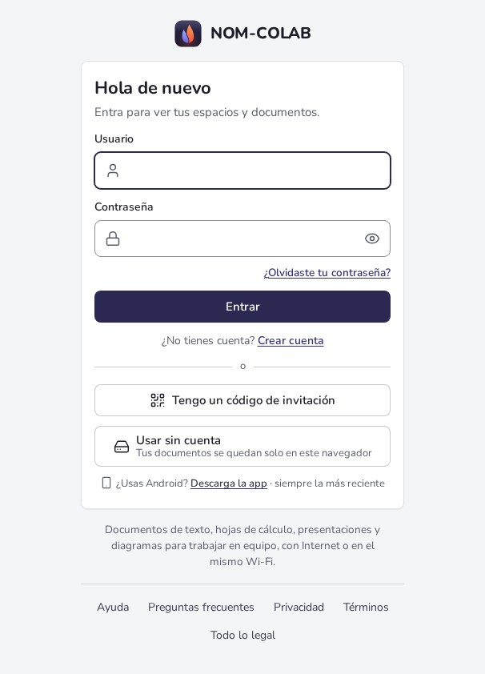
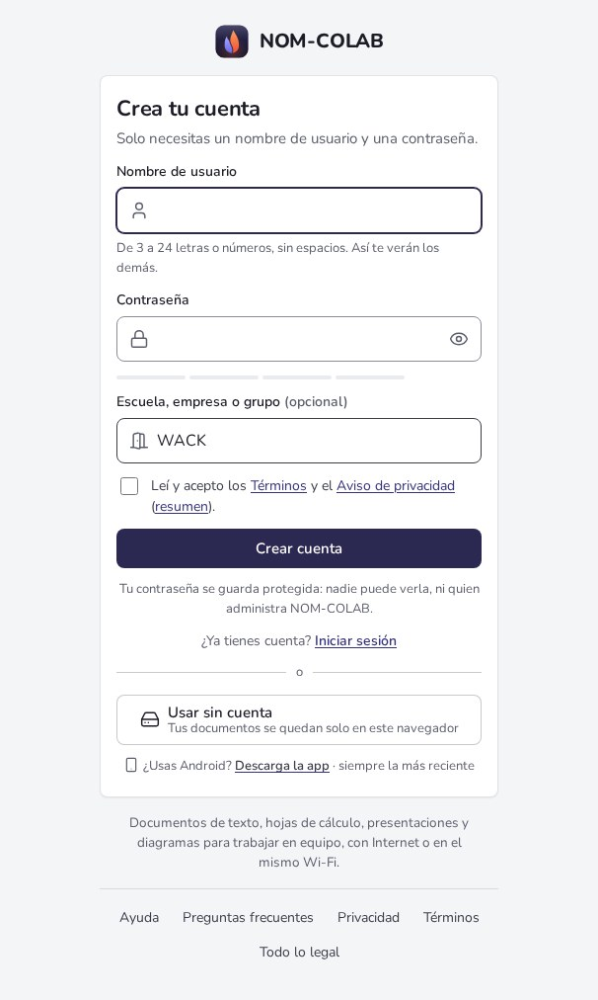
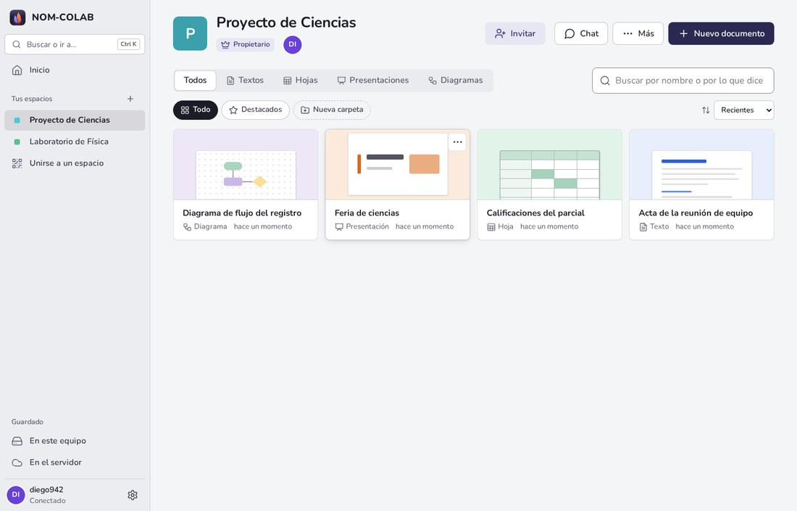
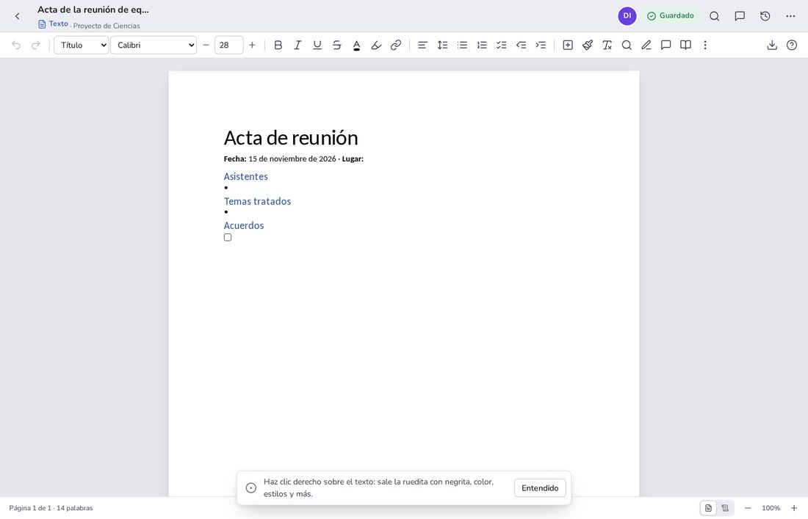
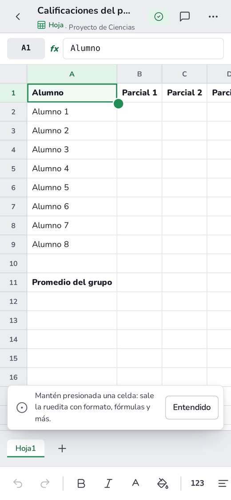
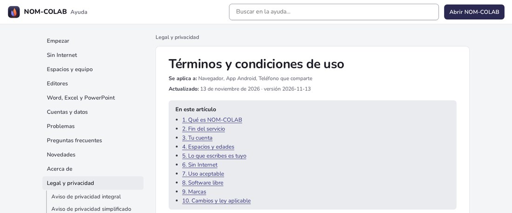

WACKPruebas y aseguramiento de la calidad de software
Documento PP-NOMCOLAB-01 · Revisión 3
Plan de pruebas
Sistema evaluado: NOM-COLAB 0.14.1Documentos para trabajar en equipo, con Internet o sin él
Elaboró: WACK, área de Aseguramiento de la calidad Proyecto: NOM-COLAB (página web y app Android) Fecha: noviembre de 2026
“We carry the flame”
WACK Pruebas y aseguramiento de la calidad de software
Documento PP-NOMCOLAB-01 · Revisión 3
Plan de pruebas (aseguramiento de la calidad)
Sistema evaluado: NOM-COLAB, versión 0.14.1
Elaboró: WACK, área de Aseguramiento de la calidad Proyecto: NOM-COLAB (página web y app Android) “We carry the flame”
Nombre
Puesto en WACK
Martínez Ortega Uriel Alejandro
Director general
Soria Flores Josep Aarón
Project manager
González Azuara Arturo Leonardo
Subdirector de operaciones
Rodríguez Esparza Diego Alejandro
Desarrollador y QA
Ciudad de México, 27 de noviembre de 2026
Índice
1. Portada y subportada1
2. Introducción
Las pruebas son un elemento crítico del software. Un error que llega al usuario cuesta mucho más que uno encontrado durante el desarrollo: se pierde trabajo, se pierde confianza y corregirlo obliga a rehacer partes que ya estaban terminadas. Por eso las pruebas no se dejan al azar, sino que se definen y se aplican mediante un proceso minucioso y bien planificado, que permite verificar que el software se construyó conforme a lo especificado y validar que de verdad resuelve la necesidad de quien lo usa.
Un plan de pruebas es el documento que señala el enfoque de las actividades de prueba: qué elementos se van a probar, qué características, con qué actividades, quién es responsable de cada una y cuáles son los riesgos asociados. Se elabora a partir de los documentos de especificación del sistema (casos de uso, requerimientos, diseño de la interfaz y modelo de la base de datos) y es la guía para las pruebas que se hacen a mano.
Las pruebas se clasifican, según lo definido por Pressman, en dos enfoques. Las pruebas de caja negra se llevan a cabo sobre la interfaz del software: demuestran que las funciones son operativas, que las entradas se manejan de forma adecuada y que se produce el resultado esperado, sin mirar el código. Las pruebas de caja blanca se centran en la estructura lógica interna y examinan en detalle los procedimientos y caminos lógicos del programa.
Objetivos de las pruebas en el software
Demostrar al desarrollador y al cliente que el software satisface sus requerimientos, con al menos una prueba para cada requerimiento documentado.
Descubrir defectos antes de que lleguen al usuario, cuando corregirlos cuesta menos.
Dar evidencia (resultado esperado contra resultado obtenido) para decidir si una versión se puede liberar.
Comprobar atributos de calidad que no son funciones visibles: la facilidad de uso, la seguridad y la portabilidad.
El proceso que se siguió tiene cuatro fases: planificación (se fijan los objetivos y los criterios de aceptación), diseño (se escriben los casos de prueba), ejecución (se aplican y se registran los resultados) y evaluación (se decide si el software cumple). En este documento, WACK presenta un plan para cada tipo de prueba aplicado al sistema NOM-COLAB: pruebas unitarias, de integración, de requerimientos y de sistema (usabilidad, seguridad y portabilidad), con los resultados de su ejecución.
3. Breve descripción del proyecto
NOM-COLAB es una aplicación para hacer documentos en equipo. Tiene cuatro tipos de documento (texto, hoja de cálculo, presentación y diagrama) y varias personas pueden editar el mismo documento al mismo tiempo desde la computadora o el celular. Su característica principal es que también funciona sin Internet: una computadora, o un teléfono, puede dar servicio a los demás equipos de la misma red, y si la conexión se corta, lo escrito se guarda en el equipo y se envía cuando la red vuelve.
Cada espacio de trabajo tiene tres permisos: Propietario, Puede editar y Solo lectura. El sistema guarda versiones de cada documento, importa y descarga archivos de Word, Excel y PowerPoint, y protege las cuentas con contraseñas cifradas y bloqueo por intentos fallidos. Es una arquitectura cliente-servidor: el cliente es una página web (la misma que usa la app de Android) y el servidor está hecho en Java con Spring Boot.
Figura 1. Arquitectura cliente-servidor de NOM-COLAB.
El sistema se organiza en cinco módulos. Son los mismos de la especificación de casos de uso del proyecto, y los que se eligieron para aplicar las pruebas de este plan.
Mód.
Nombre
Qué hace
Casos de uso
M1
Gestión de cuentas
Crear usuario, iniciar y cerrar sesión, bloqueo por intentos fallidos.
CU-01, CU-02
M2
Espacios de trabajo: gestión de accesos
Crear espacios, unirse con un código o QR y decidir quién puede leer o editar.
CU-13, CU-16, CU-17
M3
Espacios de trabajo: editor
Crear documentos, editarlos en equipo y exportarlos.
CU-18, CU-19, CU-29
M4
Espacios de trabajo: almacenamiento
Versiones, espacio ocupado, papelera y trabajo sin conexión.
CU-23, CU-24, CU-26
M5
Ayuda y legal
Guía de uso, preguntas frecuentes y avisos legales, sin iniciar sesión.
CU-30
4. Propósito
WACK es una empresa dedicada al desarrollo y a las pruebas de software colaborativo. Su área de Aseguramiento de la calidad diseña, aplica y valida pruebas para comprobar que un sistema cumple lo que promete antes de que llegue a sus usuarios, con una filosofía enfocada en el usuario: cada prueba busca proteger su trabajo, su información y su tiempo.
Como empresa de pruebas, con las pruebas diseñadas, aplicadas y validadas sobre NOM-COLAB, WACK pretende obtener:
Evidencia de que cada requerimiento se cumple. Cada requerimiento de los módulos elegidos tiene una prueba con su resultado esperado y su resultado obtenido, y queda registrado si cumplió o no.
La certeza de que la información está protegida. Que ninguna cuenta pueda ver o cambiar lo que no le corresponde y que las contraseñas no se puedan leer.
La garantía de que no se pierde trabajo. Que dos personas puedan escribir a la vez en el mismo documento y que lo escrito sin conexión llegue cuando la red vuelve.
Una medida de la facilidad de uso y de la portabilidad, con criterios e indicadores calificados en una escala, para saber qué tan listo está el producto para personas que no lo conocen y para las plataformas donde corre.
Una lista de defectos con su severidad, para que el equipo de desarrollo los corrija en orden de importancia, y una decisión fundamentada sobre si la versión se puede liberar.
Política de calidad de WACK. Una prueba solo se da por aprobada cuando el resultado obtenido coincide con el esperado; cualquier diferencia se registra como defecto. Las pruebas se hacen siempre con cuentas y datos ficticios, nunca con información de usuarios reales, y se repiten después de cada corrección.
5. Alcance
WACK, como empresa consolidada en las pruebas de software, estableció qué pruebas se aplican a cada módulo de NOM-COLAB, cómo se aplican, qué se pretende comprobar con ellas y qué se espera alcanzar. Las pruebas se basan en el enfoque de caja negra, por tratarse de una arquitectura cliente-servidor en la que lo importante es que cada función responda bien desde fuera y en la que seguir todos los caminos internos sería demasiado largo. La caja blanca se usa solo en las pruebas unitarias, sobre tres piezas pequeñas del código.
5.1 Pruebas por módulo
Módulo
Pruebas que se aplican y cómo
Qué se pretende comprobar
Qué se espera alcanzar
M1 Gestión de cuentas
Integración, requerimientos y seguridad, desde la pantalla de entrada, con datos válidos y no válidos.
Que el registro revise los datos, que solo entre quien sabe la contraseña, que el sexto intento fallido bloquee el acceso y que las contraseñas se guarden cifradas.
Todos los datos no válidos rechazados con un mensaje claro y ningún acceso indebido.
M2 Gestión de accesos
Integración, requerimientos y seguridad, con tres cuentas: propietaria, editora y lectora.
Que cada permiso deje hacer exactamente lo que le corresponde y que quitar un acceso tenga efecto inmediato.
Todas las combinaciones de permiso y acción con el resultado esperado.
M3 Editor
Unitarias (caja blanca) de la sincronización; integración y requerimientos con dos equipos a la vez.
Que lo que escribe una persona lo vean las demás, sin perder letras, y que el documento se pueda descargar.
El mismo contenido en todos los equipos y una espera menor a 1.5 segundos.
M4 Almacenamiento
Integración y requerimientos: versiones, papelera, tope de tamaño y corte de la red.
Que se pueda regresar a una versión anterior, que se respete el tope de 25 MB y que lo escrito sin conexión no se pierda.
Ningún cambio perdido al cortar y devolver la red.
M5 Ayuda y legal
Requerimientos, recorriendo las páginas sin iniciar sesión.
Que la ayuda tenga buscador e índice y que los avisos legales se puedan leer antes de crear una cuenta.
Ningún enlace roto y todas las páginas con su dirección propia.
Todos
Pruebas de sistema: usabilidad, seguridad y portabilidad, con criterios e indicadores.
Que la aplicación sea fácil de usar, que esté protegida y que funcione igual en distintas plataformas.
Calificación de “Bueno” o mejor en todos los criterios.
5.2 Tipos de prueba y enfoque
Tipo de prueba
Enfoque
Qué se hace
Sección
Pruebas unitarias
Caja blanca
Se prueba cada pieza por separado, viendo su código y recorriendo sus caminos.
6.2
Pruebas de integración
Caja negra
Se comprueba que los módulos trabajan juntos: la cuenta con el espacio, el espacio con el documento y los permisos con la edición.
6.3
Pruebas de requerimientos (validación)
Caja negra
Con la tabla de requerimientos de cada módulo, se comprueba que cada uno se cumpla en el sistema terminado.
6.4
Pruebas de sistema: usabilidad, seguridad y portabilidad
Caja negra
Se ejercita el sistema completo y se califican criterios e indicadores en la escala Excelente, Bueno, Elemental o Insuficiente.
6.5
5.3 Lo que queda fuera del alcance
Característica
Motivo
Fidelidad de los archivos de Office (que un Word o un Excel se vea idéntico)
Es una parte muy amplia que el equipo revisa por separado; aquí solo se prueba que el documento se pueda importar y descargar.
Espacios cifrados de extremo a extremo y chat
Son funciones opcionales que no pertenecen a los requerimientos originales del proyecto.
Pruebas de carga con muchas personas
El requerimiento pide cinco personas a la vez; se prueba con cinco y se comprueba el tope del servidor.
iPhone y navegadores sin soporte
No hay app para iPhone y los navegadores antiguos no forman parte de los requerimientos de software.
6. Desarrollo
En este apartado se exponen las pruebas ejecutadas a los módulos elegidos. Primero se describe cómo se organizaron (responsables, entorno, calendario y criterios) y después se presenta un plan para cada tipo de prueba, con su ficha y sus resultados. Las pruebas se ejecutaron el 15 de noviembre de 2026 sobre la versión 0.14.1, salvo donde se indica otra fecha.
6.1 Organización de las pruebas
Responsables
Integrante
Puesto
Responsabilidad en las pruebas
Martínez Ortega Uriel Alejandro
Director general
Aprueba el plan, evalúa la usabilidad y decide si la versión se libera.
Soria Flores Josep Aarón
Project manager
Lleva el calendario y el registro de defectos; pruebas de requerimientos de M1 y M5.
González Azuara Arturo Leonardo
Subdirector de operaciones
Prepara los equipos; pruebas de requerimientos de M2 y M4 y prueba de portabilidad.
Rodríguez Esparza Diego Alejandro
Desarrollador y QA
Pruebas unitarias, de integración y de seguridad; pruebas de requerimientos de M3.
Entorno de pruebas
Recurso
Detalle
Hardware
Una laptop con procesador Intel Core i7 y 16 GB de RAM (servidor de pruebas y clientes), un teléfono Samsung Galaxy A55 con Android 16 y una Raspberry Pi 5 con el servidor publicado en Internet (las dos últimas, para la prueba de portabilidad).
Software
Debian 13, OpenJDK 17, Maven 3.9 con JUnit 5, navegador Chromium, LibreOffice para abrir los archivos exportados y Python 3 para los guiones de apoyo.
Datos de prueba
Cuentas ficticias creadas para cada prueba (por ejemplo ana, beto, duena, editora y lectora), en un servidor de pruebas separado del que usa el público.
Guiones de apoyo
Los casos que comparan un código de respuesta del servidor se repiten con tres guiones cortos (casos_integracion.py, casos_permisos.py y prueba_limites.py), para poder ejecutarlos igual después de cada corrección.
Calendario
Actividad
12 oct
19 oct
26 oct
2 nov
9 nov
16 nov
23 nov
Pruebas durante el desarrollo y registro de defectos
Planificación y diseño de los casos de este plan
Pruebas unitarias y de integración
Pruebas de requerimientos y de sistema
Corrección de los defectos abiertos y repetición de las pruebas
Prueba con usuarios y con varios equipos en una misma red local
Repetición final y entrega (27 de noviembre)
Ejecutado Programado Entrega. Cada columna es la semana que empieza en esa fecha.
Criterios de aceptación
Un caso se aprueba cuando el resultado obtenido coincide con el esperado; en cualquier otro caso se rechaza y se registra un defecto.
Una versión se libera cuando todos los requerimientos de los módulos elegidos se cumplen y no queda abierto ningún defecto de severidad crítica o alta.
Las pruebas se suspenden si el servidor no arranca o no se puede iniciar sesión, y se reanudan desde el principio cuando se corrige.
Riesgos y contingencias
Riesgo
Contingencia
El equipo es de cuatro personas y también desarrolla el sistema
El plan se limitó a cinco módulos y a casos que se ejecutan en una tarde; quien programó una función no es quien prueba sus requerimientos.
Un solo teléfono Android para probar
Se complementa con el navegador del celular de cada integrante.
La red del lugar de la prueba puede bloquear la conexión entre equipos
Se prueba también con el punto de acceso de un teléfono.
Falta de tiempo antes de la entrega
Se repiten primero los casos de los defectos corregidos y los de severidad más alta.
6.2 Plan de pruebas unitarias
Las pruebas unitarias revisan una pieza del programa por separado, viendo su código (caja blanca) y recorriendo sus caminos lógicos. Se aplicaron a tres piezas pequeñas donde un error interno no se nota a simple vista: la que arma las direcciones de las páginas de ayuda, la que junta los cambios de un documento y la que junta el texto letra por letra. Cada caso es un método de JUnit que llama a la pieza con datos conocidos y compara el resultado con el esperado.
WACKAseguramiento de la calidad
Documento: PP-NOMCOLAB-01
Aplicación / módulo: M3 Editor · M5 Ayuda y legal
Revisión: 2
Nombre: Pruebas unitarias de tres clases del servidor
Estado: Concluida
Responsable
Rodríguez Esparza Diego Alejandro
Detalle de la prueba
Fecha de realización
15 de noviembre de 2026 · Duración: 5 minutos
Requerimientos de la prueba
Código fuente del servidor y sus clases de prueba
Objetivo
Comprobar que cada camino de las tres clases da el resultado esperado.
Tipo de prueba
Unitaria, caja blanca
Hardware requerido
Una computadora con 4 GB de RAM o más
Software requerido
OpenJDK 17, Maven 3.9 y JUnit 5
Datos de prueba
Direcciones de ejemplo y secuencias de cambios escritas en cada caso
Procedimiento de prueba
Ejecutar mvn test en la carpeta del servidor y revisar que cada método termine sin fallas.
Resultado esperado
Los 13 casos terminan sin fallas.
Resultado obtenido
Prueba exitosa SÍ ( X ) NO ( ) — 13 de 13 casos aprobados
Caminos de la clase PaginasLimpias
Esta clase recibe un enlace escrito dentro de una página de ayuda y regresa su dirección completa, sin index.html. Su método absoluta tiene cuatro caminos, y cada uno se recorrió con al menos un dato:
N.º
Camino
Dato de entrada
Resultado esperado
Resultado
1
El enlace no es relativo (está vacío, es un ancla, empieza con / o lleva https:): se regresa igual.
#contenido https://github.com/x
El mismo texto, sin cambios
Aprobado
2
El enlace sube carpetas con ..: se quita una carpeta por cada una.
../../ayuda/ayuda.css desde legal/terminos
/ayuda/ayuda.css
Aprobado
3
El enlace termina en index.html: se quita el nombre del archivo.
../privacidad/index.html desde legal/terminos
/legal/privacidad
Aprobado
4
El enlace lleva un ancla: se conserva al final.
../../espacios/ramas/index.html#fusionar
/ayuda/espacios/ramas#fusionar
Aprobado
Casos ejecutados
PaginasLimpias arma las direcciones de la ayuda, MotorCRDT junta los cambios de un documento y Secuencia junta el texto letra por letra.
Clase
Caso unitario
Qué comprueba
Resultado
PaginasLimpias
reconoceLasDireccionesLimpiasYLasViejas
Distingue /legal/terminos de la forma anterior con index.html.
Aprobado
PaginasLimpias
cambiaLosEnlacesRelativosPorDireccionesCompletas
Caminos 2, 3 y 4 de la tabla anterior.
Aprobado
PaginasLimpias
dejaIgualLoQueNoEsRelativo
Camino 1, con seis datos distintos.
Aprobado
PaginasLimpias
limpiaUnaPaginaCompleta
Una página con hoja de estilos, guion, formulario y enlaces.
Aprobado
MotorCRDT
convergeConCualquierOrden
Cinco personas: el documento queda igual sin importar el orden en que llegan los cambios.
Aprobado
MotorCRDT
duplicadosNoCambianNada
Recibir dos veces el mismo cambio no altera el documento.
Aprobado
MotorCRDT
empateSeResuelveIgualEnTodosLados
Dos cambios simultáneos al mismo dato se resuelven igual en todos los equipos.
Aprobado
MotorCRDT
restaurarDevuelveElEstadoDeLaVersion
Restaurar una versión deja el documento como estaba.
Aprobado
Secuencia
convergeEnCualquierOrdenYSinRepetir
El texto queda igual en todos los equipos y ninguna letra se repite.
Aprobado
Secuencia
juntaLaEscrituraSeguidaEnUnSoloTramo
Lo escrito de corrido se guarda como un solo tramo.
Aprobado
Secuencia
duenosDeParrafo
Un párrafo asignado a una persona conserva su dueño.
Aprobado
Secuencia
restaurarDejaVisibilidadYFormatoComoEnLaVersion
Restaurar devuelve también el formato y lo borrado.
Aprobado
Secuencia
lasLetrasCifradasGuardanSuMarca…
Las letras marcadas como cifradas no se juntan con las demás.
Aprobado
6.3 Plan de pruebas de integración
Las pruebas de integración comprueban que los módulos, que ya funcionan por separado, también trabajan juntos: la cuenta con el espacio, el espacio con el documento y los permisos con la edición. Son de caja negra: se hace lo mismo que haría un equipo desde la página (crear cuentas, entrar, invitar, escribir) y se compara la respuesta del servidor con la esperada, sin revisar el código.
WACKAseguramiento de la calidad
Documento: PP-NOMCOLAB-01
Aplicación / módulo: M1, M2, M3 y M4
Revisión: 2
Nombre: Pruebas de integración entre módulos
Estado: Concluida
Responsable
Rodríguez Esparza Diego Alejandro
Detalle de la prueba
Fecha de realización
15 de noviembre de 2026 · Duración: 15 minutos
Requerimientos de la prueba
Servidor de pruebas con la versión 0.14.1 y dos cuentas ficticias
Objetivo
Comprobar que la sesión, los espacios, los documentos, los permisos, las versiones y la papelera funcionan juntos.
Tipo de prueba
Integración, caja negra
Hardware requerido
Una computadora con 4 GB de RAM o más
Software requerido
OpenJDK 17, un navegador y Python 3
Datos de prueba
Cuentas ana (propietaria) y beto (invitada)
Procedimiento de prueba
Seguir en orden los casos INT-01 a INT-14 (guion casos_integracion.py) y, para los límites, los casos VL-01 a VL-18 (guion prueba_limites.py); anotar el código de respuesta de cada uno.
Resultado esperado
Cada respuesta es igual a la esperada.
Resultado obtenido
Prueba exitosa SÍ ( X ) NO ( ) — 14 de 14 casos de integración y 18 de 18 casos de límites
Casos de integración
ID
Caso (los módulos que se juntan van en orden: cuentas, espacios, documentos)
Esperado
Obtenido
Resultado
INT-01
Registrar una cuenta nueva
201
201
Aprobado
INT-02
Iniciar sesión con esa cuenta y recibir la sesión
200
200
Aprobado
INT-03
Con la sesión, crear un espacio: quien lo crea queda como Propietario
201 PROPIETARIO
201 PROPIETARIO
Aprobado
INT-04
Crear un documento de texto dentro del espacio
201
201
Aprobado
INT-05
Otra cuenta, sin invitación, intenta abrir el espacio
403
403
Aprobado
INT-06
El Propietario crea un código de invitación y la otra cuenta entra con él
201 200
201 200
Aprobado
INT-07
La invitada escribe en el documento y el Propietario ve el cambio
200 y lo ve
200 y lo ve
Aprobado
INT-08
El Propietario la cambia a solo lectura y su siguiente cambio se rechaza
200 403
200 403
Aprobado
INT-09
Con solo lectura todavía puede abrir el documento
200
200
Aprobado
INT-10
Guardar una versión con nombre y verla en el historial
200 y 1 versión
200 y 1 versión
Aprobado
INT-11
Solo lectura intenta restaurar una versión
403
403
Aprobado
INT-12
Mandar el documento a la papelera y restaurarlo
200 200
200 200
Aprobado
INT-13
El Propietario le quita el acceso y ya no puede abrir el espacio
200 403
200 403
Aprobado
INT-14
Al cerrar sesión, la sesión anterior deja de servir
401
401
Aprobado
Códigos de respuesta del servidor: 200 o 201 correcto · 400 dato no válido · 401 sin sesión · 403 sin permiso · 409 ya existe o está lleno · 413 demasiado grande · 423 bloqueado.
Casos con datos válidos y no válidos en los límites
Los límites se tomaron de las reglas del sistema: el nombre de usuario mide de 3 a 24 caracteres, la contraseña al menos 8, el acceso se bloquea al sexto intento fallido, un espacio acepta 50 conexiones a la vez y un documento ocupa 25 MB como máximo. Para cada regla se probó un dato justo dentro del límite y otro justo fuera. Las 50 conexiones de VL-13 se abrieron con el guion, no con 50 personas.
ID
Entrada
Clase
Esperado
Obtenido
Resultado
VL-01
Nombre de usuario de 2 caracteres
No válida
400
400
Aprobado
VL-02
Nombre de 3 caracteres
Válida
201
201
Aprobado
VL-03
Nombre de 24 caracteres
Válida
201
201
Aprobado
VL-04
Nombre de 25 caracteres
No válida
400
400
Aprobado
VL-05
Nombre con un espacio (ana luz)
No válida
400
400
Aprobado
VL-06
Contraseña de 7 caracteres
No válida
400
400
Aprobado
VL-07
Contraseña de 8 caracteres
Válida
201
201
Aprobado
VL-08
Nombre que ya está registrado
No válida
409
409
Aprobado
VL-09
El mismo nombre en mayúsculas
No válida
409
409
Aprobado
VL-10
Quinto intento fallido de inicio de sesión
Todavía entra
401
401
Aprobado
VL-11
Sexto intento fallido
Bloqueo
423
423
Aprobado
VL-12
Contraseña correcta durante el bloqueo
Bloqueo
423
423
Aprobado
VL-13
50 conexiones a la vez al mismo espacio
Válida
50 × 200
50 × 200
Aprobado
VL-14
La conexión número 51
No válida
409
409
Aprobado
VL-15
Agregar 1 MB de texto a un documento
Válida
200
200
Aprobado
VL-16
Agregar 26 MB de una vez (tope: 25 MB)
No válida
413
413
Aprobado
VL-17
Después del rechazo, agregar 10 bytes
Válida
200
200
Aprobado
VL-18
Agregar 60 MB a un documento nuevo
No válida
413
413
Aprobado
Permisos: qué puede hacer cada quien
Cada celda es el resultado esperado al combinar un permiso con una acción. Las 30 combinaciones se ejecutaron con las cuentas duena, editora, lectora y ajena (guion casos_permisos.py) y todas dieron el resultado esperado.
Acción \ Permiso
Propietario
Puede editar
Solo lectura
Sin acceso
Sin sesión
Abrir el espacio y sus documentos
Sí
Sí
Sí
403
401
Escribir en un documento
Sí
Sí
403
403
401
Dar o quitar accesos
Sí
403
403
403
401
Crear un código de invitación
Sí
403
403
403
401
Mandar un documento a la papelera
Sí
Sí
403
403
401
Vaciar la papelera
Sí
403
403
403
401
6.4 Plan de pruebas de requerimientos (validación)
El objetivo de estas pruebas es buscar discrepancias entre los requerimientos y la ejecución del software. Se basan en la tabla de requerimientos de cada módulo, tomada del documento de requerimientos del proyecto, y comprueban que cada uno se encuentre satisfecho con el resultado final del sistema. Para cada requerimiento se indica si cumplió y con qué se comprobó.
6.4.1 Módulo M1: Gestión de cuentas
WACKPrueba de requerimientos
Fecha: 15/11/2026
Módulo: M1 Gestión de cuentas · Submódulo: crear usuario e iniciar sesión
Duración: 25 min
Evaluador: Soria Flores Josep Aarón
Revisión: 2
Procedimiento de prueba
Recorrer la pantalla de entrada y la de crear cuenta con datos válidos y no válidos, y comparar el funcionamiento con cada requerimiento. Los casos con código de respuesta se toman de la sección 6.3.
Resultado esperado
Cumplimiento de todos los requerimientos del módulo.
Resultado obtenido
Prueba exitosa SÍ ( X ) NO ( ) — 7 de 7 requerimientos
Requerimientos
Cumplió con el requerimiento
Comentarios
SÍ
NO
El sistema debe permitir la creación de nuevos usuarios solicitando obligatoriamente un nombre de usuario y una contraseña.
X
Correcto (INT-01). Sin nombre o sin contraseña no crea la cuenta (VL-01 a VL-07) y dice qué corregir.
El sistema debe incluir un campo opcional para registrar el nombre de la empresa u organización.
X
Correcto. El campo «Escuela, empresa o grupo» está marcado como opcional y la cuenta se crea con él o sin él (figura 3).
El sistema debe proveer una interfaz dedicada para el inicio de sesión de usuarios registrados mediante credenciales válidas.
X
Correcto (INT-02, figura 2). Con datos incorrectos muestra «Usuario o contraseña incorrectos», sin decir cuál de los dos falló.
El sistema debe gestionar y validar el acceso para permitir la consulta e integración de archivos en el entorno colaborativo.
X
Correcto. Sin sesión el servidor responde 401 (INT-14); con sesión se pueden importar archivos de Word, Excel y PowerPoint.
Las contraseñas deben cifrarse en tránsito y en reposo utilizando algoritmos robustos.
X
Cumple con una observación. En reposo se guardan con PBKDF2-SHA256 y una sal por cuenta. En tránsito van por HTTPS en Internet; en la red local sin Internet la conexión es HTTP y la página lo avisa.
El proceso de inicio de sesión o de creación de cuentas no debe tomar más de 2 segundos.
X
Correcto. Medido en el servidor de pruebas: crear la cuenta tardó 194 ms e iniciar sesión, 88 ms.
El acceso se bloquea si hay más de 5 intentos de inicio de sesión con contraseña incorrecta.
X
Correcto. El quinto intento fallido todavía responde 401 y el sexto bloquea 15 minutos (VL-10 a VL-12).

Figura 2. Pantalla de entrada durante la prueba.

Figura 3. Crear cuenta: el campo de la organización es opcional.
6.4.2 Módulo M2: Espacios de trabajo, gestión de accesos
WACKPrueba de requerimientos
Fecha: 15/11/2026
Módulo: M2 Gestión de accesos · Submódulo: crear espacio, unirse y permisos
Duración: 30 min
Evaluador: González Azuara Arturo Leonardo
Revisión: 2
Procedimiento de prueba
Con tres cuentas (propietaria, editora y lectora), crear un espacio, invitar con un código, cambiar permisos y quitar accesos; comparar con cada requerimiento.
Resultado esperado
Cumplimiento de todos los requerimientos del módulo.
Resultado obtenido
Prueba exitosa SÍ ( X ) NO ( ) — 6 de 6 requerimientos
Requerimientos
Cumplió con el requerimiento
Comentarios
SÍ
NO
Debe permitir la activación de la “Conexión del Proyecto” para visibilizar proyectos activos a otros usuarios.
X
Cumple con una observación. El Propietario comparte el espacio con un código o un QR y puede hacerlo visible en el mismo Wi-Fi. Falta probar el descubrimiento automático en una red con varios equipos reales.
Un usuario con sesión puede crear un espacio de trabajo y queda como su Propietario (CU-13).
X
Correcto (INT-03, figura 4).
Otra persona puede unirse al espacio con el código de invitación (CU-16).
X
Correcto (INT-06). Sin invitación, el espacio no se puede abrir (INT-05).
Debe permitir el control de accesos de lectura y de edición.
X
Correcto. Al cambiar a una persona a solo lectura, su siguiente cambio se rechaza, pero sigue pudiendo leer (INT-08 e INT-09).
El Propietario puede quitar el acceso a una persona (CU-17).
X
Correcto (INT-13): la persona deja de ver el espacio.
Solo el Propietario administra los accesos del espacio.
X
Correcto. A quien edita o solo lee, el servidor le responde 403 (tabla de permisos de la sección 6.3).

Figura 4. Un espacio de trabajo con sus cuatro tipos de documento y el botón «Invitar».
6.4.3 Módulo M3: Espacios de trabajo, editor
WACKPrueba de requerimientos
Fecha: 15/11/2026
Módulo: M3 Editor · Submódulo: crear, editar en equipo y descargar
Duración: 40 min
Evaluador: Rodríguez Esparza Diego Alejandro
Revisión: 2
Procedimiento de prueba
Abrir el mismo documento en dos navegadores (uno con tamaño de computadora y otro de celular), escribir desde los dos y comprobar que cada uno ve los cambios del otro; repetir con cinco sesiones a la vez durante 10 segundos y medir la espera; exportar un documento de cada tipo.
Resultado esperado
Cumplimiento de todos los requerimientos del módulo.
Resultado obtenido
Prueba exitosa SÍ ( X ) NO ( ) — 6 de 6 requerimientos
Requerimientos
Cumplió con el requerimiento
Comentarios
SÍ
NO
Proporciona un lienzo capaz de trabajar con procesamiento de texto, hojas de cálculo, presentaciones y organizadores gráficos.
X
Cumple con una observación. Los cuatro tipos se crean y se editan. El tipo se elige al crear el documento y ya no cambia: se decidió así para no dañar el formato.
Desplegará micro-textos explicativos al mantener el cursor o hacer una pulsación prolongada sobre los íconos de herramientas.
X
Correcto: aparecen al dejar el cursor sobre un botón y, en pantallas táctiles, al mantenerlo presionado.
Sincronizar las acciones de múltiples usuarios en tiempo real para garantizar la consistencia en la edición concurrente.
X
Correcto (INT-07). Con cinco sesiones escribiendo a la vez se enviaron 261 letras y las 261 quedaron en el documento.
El sistema debe soportar hasta un máximo de 5 usuarios trabajando de manera simultánea sin verse afectado el rendimiento.
X
Correcto. Cinco sesiones durante 10 segundos: 168 envíos, ninguno con error.
Las modificaciones deben reflejarse en la pantalla de los demás usuarios con una latencia menor a 1500 ms.
X
Correcto en el servidor de pruebas: el cambio llegó a los demás en 16 ms como máximo. Falta medirlo en una red con varios equipos reales.
El documento se puede exportar como archivo de Word, Excel o PowerPoint (CU-29).
X
Correcto: con «Exportar» se descargaron un .docx, un .xlsx y un .pptx, y los tres abrieron en LibreOffice.

Figura 5. Editor de texto en la computadora.

Figura 6. Hoja de cálculo en el celular.
6.4.4 Módulo M4: Espacios de trabajo, almacenamiento
WACKPrueba de requerimientos
Fecha: 15/11/2026
Módulo: M4 Almacenamiento · Submódulo: versiones, espacio ocupado y sin conexión
Duración: 30 min
Evaluador: González Azuara Arturo Leonardo
Revisión: 2
Procedimiento de prueba
Guardar y restaurar una versión, revisar cuánto ocupa el espacio, mandar un documento a la papelera y, con el documento abierto, cortar la conexión del navegador, escribir y volver a conectarla.
Resultado esperado
Cumplimiento de todos los requerimientos del módulo.
Resultado obtenido
Prueba exitosa SÍ ( X ) NO ( ) — 5 de 5 requerimientos
Requerimientos
Cumplió con el requerimiento
Comentarios
SÍ
NO
Administrar el almacenamiento de documentos, permitiendo la gestión de versiones.
X
Correcto (INT-10). Una persona con solo lectura puede ver el historial, pero no restaurar (INT-11).
El Propietario puede ver cuánto ocupa su espacio y liberar lugar (CU-24).
X
Correcto: «Cuánto ocupa» muestra el consumo por documento y deja depurar versiones antiguas.
Un documento no puede rebasar el tope de almacenamiento (25 MB).
X
Correcto (VL-15 a VL-18): el envío que rebasa el tope se rechaza completo y el documento sigue funcionando.
Un documento borrado se puede recuperar de la papelera (CU-24).
X
Correcto (INT-12). Solo el Propietario puede vaciar la papelera.
Lo que se escribe sin conexión se guarda y se envía al volver la red (CU-26).
X
Correcto: al volver la conexión, el texto escrito sin ella llegó al servidor y a la otra sesión. Falta repetirlo apagando el Wi-Fi de un equipo real.
6.4.5 Módulo M5: Ayuda y legal
WACKPrueba de requerimientos
Fecha: 15/11/2026
Módulo: M5 Ayuda y legal · Submódulo: guía de uso, preguntas frecuentes y avisos
Duración: 20 min
Evaluador: Soria Flores Josep Aarón
Revisión: 2
Procedimiento de prueba
Sin iniciar sesión, abrir la ayuda desde el pie de la pantalla de entrada, usar el buscador y recorrer las páginas en la computadora y a 360 px de ancho (celular).
Resultado esperado
Cumplimiento de todos los requerimientos del módulo.
Resultado obtenido
Prueba exitosa SÍ ( X ) NO ( ) — 4 de 4 requerimientos
Requerimientos
Cumplió con el requerimiento
Comentarios
SÍ
NO
Ofrecer una guía de uso o manual de usuario integrado para orientar al cliente en la navegación.
X
Correcto: 65 páginas de ayuda organizadas en diez temas.
Apartado de Preguntas Frecuentes (FAQ), ordenado de manera que no sea confuso de leer.
X
Correcto: está en /ayuda/preguntas-frecuentes y se llega desde la pantalla de entrada.
El manual debe contar con un buscador interno e índice navegable.
X
Correcto: el buscador encuentra los artículos por palabra y cada artículo tiene su índice (figura 7).
Los avisos legales (privacidad y términos) se pueden leer antes de crear una cuenta, cada uno en su dirección propia.
X
Correcto: /legal/privacidad y /legal/terminos, sin index.html. Ningún enlace roto en las 75 páginas revisadas.

Figura 7. Términos y condiciones en /legal/terminos, con su índice y el buscador de la ayuda.
6.5 Plan de pruebas de sistema
El propósito primordial de las pruebas de sistema es ejercitar profundamente el sistema completo, verificando que se hayan integrado adecuadamente todos sus elementos y que realizan las funciones apropiadas. Comprenden las pruebas de usabilidad, de seguridad y de portabilidad. Cada criterio se califica en la escala Excelente, Bueno, Elemental o Insuficiente, y cada calificación se justifica en su comentario.
6.5.1 Prueba de usabilidad
Determina el grado de facilidad de uso del sistema, la operatividad que presenta y que el usuario entienda cómo funciona.
WACKPruebas de usabilidad
Fecha: 15/11/2026
Módulo: todos (página web y celular)
Revisión: 2
Evaluador: equipo WACK (evaluación interna)
Estado: Concluida
Procedimiento de prueba
Hacer las tareas principales (crear cuenta, crear un espacio, invitar, escribir en un documento y descargarlo) en la computadora y en el celular, y calificar cada criterio.
Resultado esperado
El sistema es fácil de usar para cualquier usuario y le da confianza para manejar el programa.
Resultado obtenido
Prueba exitosa SÍ ( X ) NO ( ). La evaluación es interna: falta repetirla con personas que no conocen la aplicación.
Criterios e indicadores
Descripción
Exc.
Bueno
Elem.
Insuf.
Comentario
Inteligibilidad
Que el usuario entienda qué hace cada parte del sistema.
X
Cada tipo de documento tiene su color y las herramientas que no se entienden con el ícono llevan su nombre.
Facilidad de aprendizaje
Qué tan fácil aprende a usarlo alguien nuevo.
X
El inicio muestra una lista de «Primeros pasos»; falta medirlo con personas ajenas al equipo.
Operabilidad
Que el usuario pueda operarlo y controlarlo.
X
Deshacer y rehacer, teclado y toque; en el celular nada se sale de la pantalla.
Atractividad
Que la presentación sea agradable al usuario.
X
Diseño sobrio, con tema claro y oscuro.
Herramientas de ayuda
Apoyo al usuario sobre cómo se usa el sistema.
X
Micro-textos en los botones y sitio de ayuda con buscador; se llega desde la pantalla de entrada.
Expectativas
Que haga lo que el usuario espera al dar una orden.
X
Los cambios se guardan solos y se avisa cuando no hay conexión.
Validación con usuarios (programada). En la semana del 16 de noviembre, cinco personas que no conocen la aplicación harán cuatro tareas: unirse a un espacio con el QR, escribir entre todos un acta, llenar una hoja de cálculo y descargar una presentación. Criterio de aceptación: al menos cuatro de cinco terminan cada tarea sin ayuda.
6.5.2 Prueba de seguridad
Intenta verificar que los mecanismos de protección incorporados en el sistema lo protegerán, de hecho, de accesos impropios.
WACKPrueba de seguridad
Revisión: 2
Aplicación del módulo: M1 Gestión de cuentas y M2 Gestión de accesos
Estado: Concluida
Nombre: Prueba de seguridad de NOM-COLAB 0.14.1 · Responsable: Rodríguez Esparza Diego Alejandro
Fecha: 15/11/2026
Detalles de la prueba
Duración de la prueba
30 minutos
Tipo de prueba
Pruebas de sistema (seguridad)
Requerimientos de la prueba
Disponer del servidor de pruebas y de la página web
Procedimiento de prueba
Se intenta entrar sin sesión y con una contraseña equivocada seis veces; se escribe ' OR 1=1 -- como nombre de usuario; con cada permiso se intenta hacer lo que no le corresponde; se revisa cómo quedó guardada la contraseña en la base de datos.
Resultado esperado
Los elementos del sistema cumplen con los parámetros de seguridad.
Resultado obtenido
Prueba exitosa SÍ ( X ) NO ( )
Criterios e indicadores
Descripción
Exc.
Bueno
Elem.
Insuf.
Comentario
Cifrado de contraseñas
La contraseña del usuario se guarda con algún tipo de cifrado.
X
En la base solo hay una huella PBKDF2-SHA256 con una sal distinta por cuenta; la contraseña no se puede leer.
Control de acceso
Cada usuario solo hace lo que su permiso le deja.
X
Las 30 combinaciones de la tabla de permisos dieron el resultado esperado, también al saltarse la página.
Integridad de la información
La información no se modifica sin permiso de su dueño.
X
Quien solo lee no puede escribir ni restaurar versiones (INT-08, INT-11).
Datos cifrados durante la conexión
Los datos van cifrados entre el cliente y el servidor.
X
HTTPS en Internet. En la red local sin Internet va sin cifrar y la página lo avisa.
Sesiones y bloqueo
Los intentos repetidos se bloquean y la sesión se puede cerrar.
X
Bloqueo de 15 minutos al sexto intento (VL-11); al cerrar sesión la anterior deja de servir (INT-14).
Entradas maliciosas
Lo que se escribe no se ejecuta como una orden.
X
La inyección SQL en el inicio de sesión responde 401, igual que cualquier contraseña equivocada.
Comentarios: el sistema protege de forma correcta las cuentas y los espacios. El punto por mejorar es la conexión en la red local, que no puede llevar un certificado de confianza; por eso se avisa a la persona en la pantalla de entrada.
6.5.3 Prueba de portabilidad
La portabilidad es la característica que posee un software para ejecutarse en diferentes plataformas: el código se reutiliza en vez de crear uno nuevo cuando el software pasa de una plataforma a otra. A mayor portabilidad, menor es la dependencia del software con respecto a la plataforma.
WACKPrueba de portabilidad
Documento: PP-NOMCOLAB-01
Aplicación / módulo: todo el sistema (servidor, página y app)
Revisión: 2
Nombre: Prueba de portabilidad · Responsable: González Azuara Arturo Leonardo
Estado: Parcial
Detalle de la prueba
Fecha de realización
Del 14 al 15 de noviembre de 2026
Requerimientos de la prueba
El mismo programa del servidor y la misma página en cada plataforma
Objetivo
Comprobar que NOM-COLAB funciona en distintas plataformas sin cambiar su código.
Tipo de prueba
Pruebas de sistema (portabilidad)
Procedimiento de prueba
En cada plataforma, crear una cuenta, un espacio y un documento, y editarlo desde dos equipos.
Resultado esperado
La misma funcionalidad en todas las plataformas.
Resultado obtenido
Prueba exitosa SÍ ( X ) NO ( ) en las dos plataformas probadas por completo; quedan una parcial y dos por probar (tabla de plataformas).
Subatributos
Descripción
Exc.
Bueno
Elem.
Insuf.
Comentario
Adaptabilidad
El software se adapta al sistema y cumple con su funcionamiento.
X
El mismo servidor corre en una laptop (x86-64) y en una Raspberry Pi (ARM); la página es la misma en el navegador y en la app.
Facilidad de instalación
Es posible instalarlo sin alterar ningún componente del software o del sistema.
X
El servidor trae su propio Java y arranca con un archivo. La app pide permitir la instalación desde fuera de la tienda.
Coexistencia
Convive con otro software independiente en el mismo equipo.
X
No instala servicios ni una base de datos aparte; guarda todo en su carpeta y el puerto se puede cambiar.
Reemplazabilidad
Es capaz de reemplazar a otro software con la misma funcionalidad.
X
Abre y descarga archivos de Word, Excel y PowerPoint, pero no tiene todas las funciones de esos programas.
Conformidad de portabilidad
Se cumple con todos los subatributos anteriores.
X
Ninguno quedó en Elemental o Insuficiente.
Plataformas
Plataforma
Qué se probó
Resultado
Laptop con Debian 13 (x86-64), navegador Chromium
Todos los casos de este plan, con la versión 0.14.1 (15 de noviembre).
Aprobado
Raspberry Pi 5 (ARM), servidor en Internet
Crear cuenta, espacio y documento desde la dirección pública, con la versión 0.14.0 (15 de noviembre).
Aprobado
Samsung Galaxy A55 (Android 16), navegador Chrome
Las funciones de los cuatro editores en el teléfono real: 162 de 163 (14 de noviembre, versión anterior). Falta repetirlo con la 0.14.1.
Parcial
Samsung Galaxy A55, app de Android
Falta instalar la versión 0.14.1 y repetir los casos de M1 a M4.
Pendiente
Computadora con Windows 10
El paquete incluye el arranque para Windows; falta ejecutarlo en un equipo real.
Pendiente
6.6 Defectos encontrados
Cada defecto se registra con su fecha, su módulo, su severidad y su estado. La severidad es crítica si se pierde trabajo o se expone información, alta si una función importante falla sin forma de rodearla, media si falla en un caso particular y baja si es un detalle que no afecta el uso. Desde octubre el equipo lleva registrados 50 defectos; la tabla muestra los más importantes de los módulos de este plan y el que se encontró al ejecutarlo (DEF-50).
ID
Fecha
Mód.
Descripción
Severidad
Estado
DEF-09
22 oct
M3
En Chrome y en la app, lo escrito con el teclado se veía en pantalla pero no se guardaba ni se enviaba a los demás.
Crítica
Cerrado
DEF-13
11 nov
M4
Un documento con cambios sin enviar no se podía volver a abrir sin conexión.
Alta
Cerrado
DEF-14
11 nov
M1
Restablecer la contraseña borraba sin avisar lo guardado solo en el equipo.
Alta
Cerrado
DEF-15
11 nov
M1
Quien supiera un nombre de usuario podía dejarlo bloqueado fallando la contraseña a propósito.
Alta
Cerrado
DEF-18
12 nov
M4
El tope de 25 MB se podía rebasar con un solo envío grande; ahora se revisa antes de guardar y responde 413 (VL-16 a VL-18).
Media
Cerrado
DEF-29
13 nov
M2
En la red local, el botón de copiar el código decía «copiado» sin haber copiado nada.
Alta
Cerrado
DEF-46
14 nov
M4
Lo escrito sin conexión se juntaba solo con el original aunque otra persona lo hubiera cambiado; ahora se abre una rama para compararlo.
Alta
Cerrado
DEF-48
14 nov
M2
En la app, un código de invitación escrito sin guion se tomaba como la dirección de un servidor.
Media
Cerrado
DEF-50
15 nov
M2
Al pedir una dirección del servidor con un método que no existe (por ejemplo POST en vez de PUT en los accesos), responde con el error 500 en lugar de 405. No cambia ningún dato.
Baja
Cerrado
DEF-55
22 nov
M3
Seis botones de los editores (buscar, historial, nueva hoja, nueva diapositiva y las dos vistas del texto) no tenían nombre para un lector de pantalla: solo se veía su ícono.
Media
Cerrado
DEF-56
22 nov
M1
Las iniciales en blanco sobre cinco de los ocho colores de las cuentas se leían con un contraste menor a 4.5 a 1 (el naranja, 2.5 a 1).
Baja
Cerrado
Cada defecto cerrado tiene un caso de prueba que se repite para comprobar que no regrese. DEF-50 se encontró durante las pruebas de integración, al equivocarse de método en una petición; se corrigió en la versión 0.14.2 (ahora responde 405) y los casos INT-01 a INT-14 se repitieron sin fallas. DEF-55 y DEF-56 salieron en el seguimiento del 22 de noviembre (sección 6.8).
6.7 Resumen de resultados
Prueba
Casos
Aprobados
Avance
Resultado
Unitarias (caja blanca)
13
13
Aprobado
Integración entre módulos
14
14
Aprobado
Datos en los límites
18
18
Aprobado
Combinaciones de permiso y acción
30
30
Aprobado
Requerimientos (cinco módulos)
28
28
Aprobado, con tres observaciones
Plataformas (portabilidad)
5
2
Una parcial y dos pendientes
Relación entre casos de uso y pruebas
Cada caso de uso de la especificación tiene al menos una prueba, como pide el objetivo del proceso de pruebas.
Caso de uso
Pruebas que lo comprueban
CU-01 Crear usuario
INT-01; VL-01 a VL-09; requerimientos de M1
CU-02 Iniciar sesión
INT-02 e INT-14; VL-10 a VL-12; prueba de seguridad
CU-13 Crear espacio de trabajo
INT-03; requerimientos de M2
CU-16 Unirse a un espacio
INT-05 e INT-06; VL-13 y VL-14
CU-17 Gestionar accesos y permisos
INT-08, INT-09 e INT-13; tabla de permisos
CU-18 Crear documento
INT-04; requerimientos de M3
CU-19 Editar documento en equipo
INT-07; unitarias de MotorCRDT y Secuencia; requerimientos de M3
CU-29 Exportar documento
Requerimientos de M3
CU-23 Gestionar versiones
INT-10 e INT-11; unitarias de restaurar
CU-24 Administrar almacenamiento
INT-12; VL-15 a VL-18
CU-26 Trabajar sin conexión
Requerimientos de M4
CU-30 Consultar la ayuda y los avisos legales
Unitarias de PaginasLimpias; requerimientos de M5
Pendientes
Corregir DEF-50 y repetir las pruebas de integración.
Repetir en el teléfono real (navegador y app de Android) con la versión 0.14.1, y probar el servidor en una computadora con Windows.
Probar con cinco equipos reales en una misma red local y medir ahí la espera entre equipos.
Hacer la validación de usabilidad con cinco personas ajenas al equipo.
6.8 Seguimiento del 22 de noviembre (versión 0.22.0)
Después de la revisión 2, el equipo siguió agregando funciones hasta la versión 0.22.0 (21 de noviembre). Para comprobar que nada de lo ya aprobado se rompió, el 22 de noviembre se repitieron sobre la 0.22.0 las pruebas de este plan que se ejecutan solas, y se agregó una revisión automática de accesibilidad con las reglas de las Pautas de Accesibilidad para el Contenido Web (WCAG) 2.2, nivel AA. Las pruebas a mano (requerimientos, usabilidad y plataformas) conservan sus resultados del 15 de noviembre.
Prueba (22 de noviembre, versión 0.22.0)
Casos
Aprobados
Observación
Unitarias (caja blanca)
26
26
El conjunto creció de 13 a 26 pruebas con las funciones nuevas.
Integración entre módulos
14
14
Registro en 1.7 s e inicio de sesión en 0.8 s.
Datos en los límites
18
18
En VL-18 el servidor contesta 413 y corta el envío sin recibirlo completo (así nadie lo satura); el programa de la prueba se ajustó para leer esa respuesta.
Combinaciones de permiso y acción
30
30
Sin cambios.
Accesibilidad automática (nueva)
28
28
28 pantallas en computadora y celular, también el tema oscuro. La primera revisión encontró DEF-55 y DEF-56; corregidos, todas quedan sin fallas.
Pendientes del 15 de noviembre, al día de hoy
Hecho: corregir DEF-50 (versión 0.14.2) y repetir las pruebas de integración.
Hecho: el servidor en una computadora con Windows (la regresión completa de cada versión corre ahí).
En parte: el teléfono real (Samsung A55) con la app de Android se probó con la 0.19.0 el 21 de noviembre (paso de los datos guardados a la versión nueva: 29 de 29; conexión con otros equipos: 9 de 9); falta repetirlo con la 0.22.0.
Falta: cinco equipos reales en una misma red local y la validación de usabilidad con cinco personas ajenas al equipo.
El plan de construcción agregó un sexto módulo, M6 Digitalización (convertir una hoja impresa, una foto o un PDF en un documento editable, con reconocimiento de texto), que se construye después del 27 de noviembre. Su caso de uso (CU-31) ya está en la especificación; sus pruebas se diseñarán con este mismo formato cuando exista.
7. Referencias
International Organization for Standardization. (2011). Systems and software engineering — Systems and software Quality Requirements and Evaluation (SQuaRE) — System and software quality models (ISO/IEC 25010:2011). ISO.
Myers, G. J., Badgett, T. y Sandler, C. (2011). The art of software testing (3.ª ed.). John Wiley & Sons.
Pressman, R. S. y Maxim, B. R. (2021). Ingeniería del software: un enfoque práctico (9.ª ed.). McGraw-Hill.
Pruebas de Software. (2026a). Unidad 1_3: Características de las pruebas de validación [Diapositivas].
Pruebas de Software. (2026b). Unidad 3_1: Elaboración del plan de pruebas (aseguramiento de la calidad) [Diapositivas].
Pruebas de Software. (2026c). Unidad 3_2: Ejecución de pruebas y evaluación de la calidad [Diapositivas].
Sommerville, I. (2016). Software engineering (10.ª ed.). Pearson.
WACK. (2026a). NOM-COLAB: planeación del proyecto y requerimientos [Documento interno].
WACK. (2026b). NOM-COLAB: especificación de casos de uso, por módulos [Documento interno].
8. Conclusiones
Como empresa de pruebas, WACK aplicó a NOM-COLAB un plan para cada tipo de prueba: unitarias, de integración, de requerimientos y de sistema (usabilidad, seguridad y portabilidad). Se aprobaron los 13 casos unitarios, los 14 de integración y los 18 de datos en los límites, y los 28 requerimientos revisados de los cinco módulos se cumplen, tres de ellos con una observación. Cada caso de uso de la especificación quedó cubierto por al menos una prueba.
Las pruebas mostraron que la parte más sólida del sistema son las cuentas y los permisos: las contraseñas se guardan cifradas, el acceso se bloquea al sexto intento fallido y ninguna persona puede hacer más de lo que su permiso le deja, ni siquiera saltándose la página. También se comprobó lo que distingue al proyecto: lo que escribe una persona lo ven las demás en menos de un segundo y lo escrito sin conexión llega cuando la red vuelve.
El plan cumplió además su objetivo de encontrar defectos antes que el usuario. Al ejecutarlo apareció uno nuevo de severidad baja (DEF-50), y las pruebas de las semanas anteriores habían encontrado otros más graves, como el que dejaba rebasar el tope de 25 MB (DEF-18) o el que juntaba sin avisar lo escrito sin conexión (DEF-46), que ya están corregidos y tienen su caso de prueba.
También quedó claro lo que un equipo de cuatro personas no alcanzó a cubrir: falta probar la app de Android con la última versión, el servidor en Windows, varios equipos en una misma red local y la usabilidad con personas ajenas al equipo. Con estos resultados, la decisión de WACK es liberar la versión 0.14.1 para la presentación del proyecto, porque no tiene defectos críticos ni altos abiertos, y completar los pendientes en las semanas del 16 y del 23 de noviembre, repitiendo las pruebas de este plan después de cada corrección. En el seguimiento del 22 de noviembre (sección 6.8) las pruebas automáticas se repitieron sobre la versión 0.22.0 con los mismos resultados, y la revisión nueva de accesibilidad quedó sin fallas después de corregir DEF-55 y DEF-56.
Aprobaciones
Martínez Ortega Uriel AlejandroDirector general
Soria Flores Josep AarónProject manager
González Azuara Arturo LeonardoSubdirector de operaciones
Rodríguez Esparza Diego AlejandroDesarrollador y QA